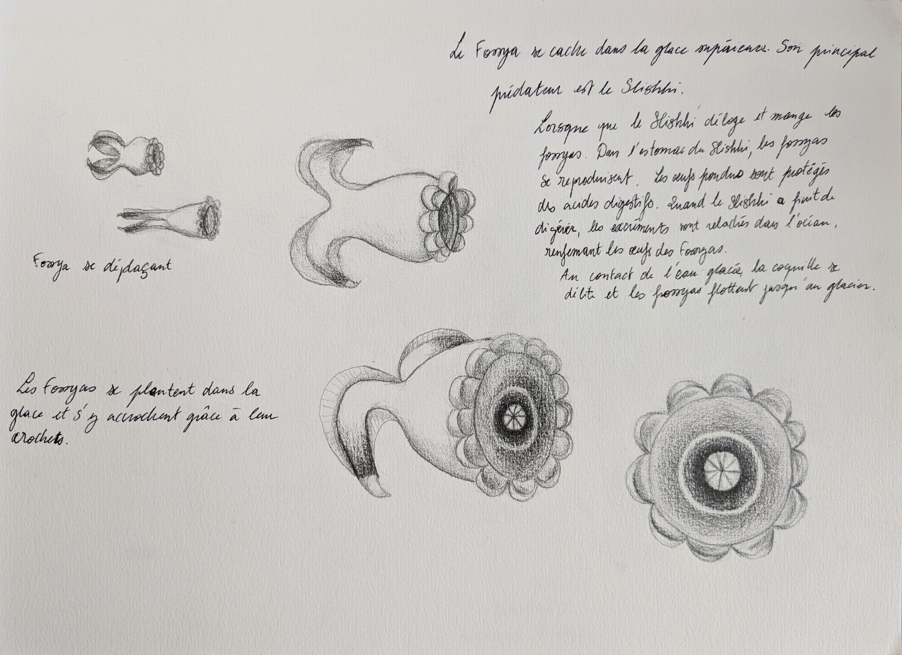
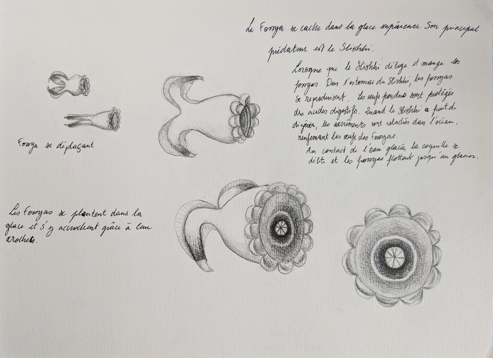

L'espace regorge de planète qui ont des conditions très différentes de notre Terre. Je me suis interrogée sur comment un organisme se serait développé dans une planète complétement inospitalière à l'homme. Ainsi, une espèce naissant sur une planète océan dont les températures sont glaciales aurait une perception de son environnement très différente de l'humain. J'ai tout d'abord réaliser des croquis d'aliennes qui auraient pu vivre dans ses conditions et je les ai ensuite modélisé en 3D
Key word : Anatomy, Space
 
